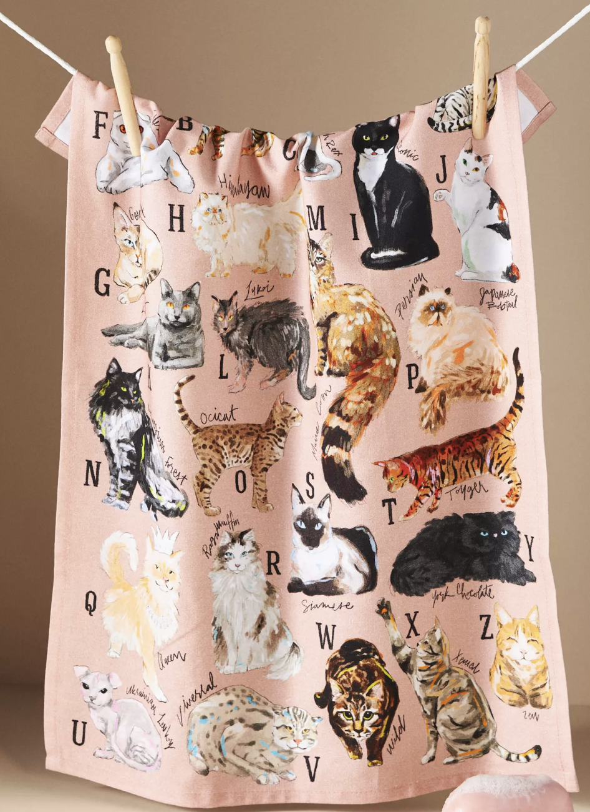
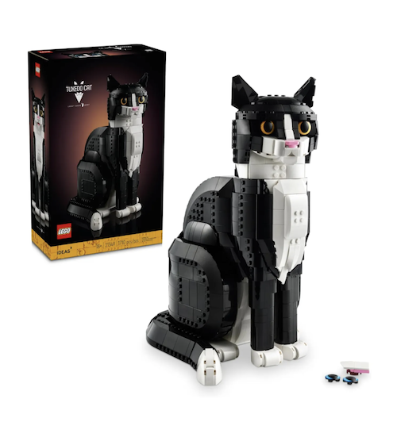
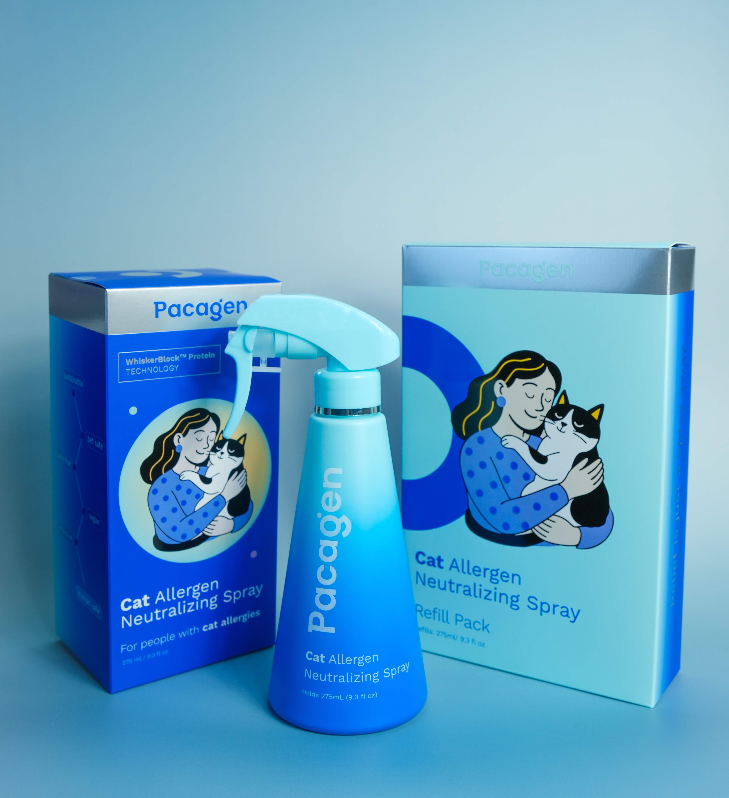
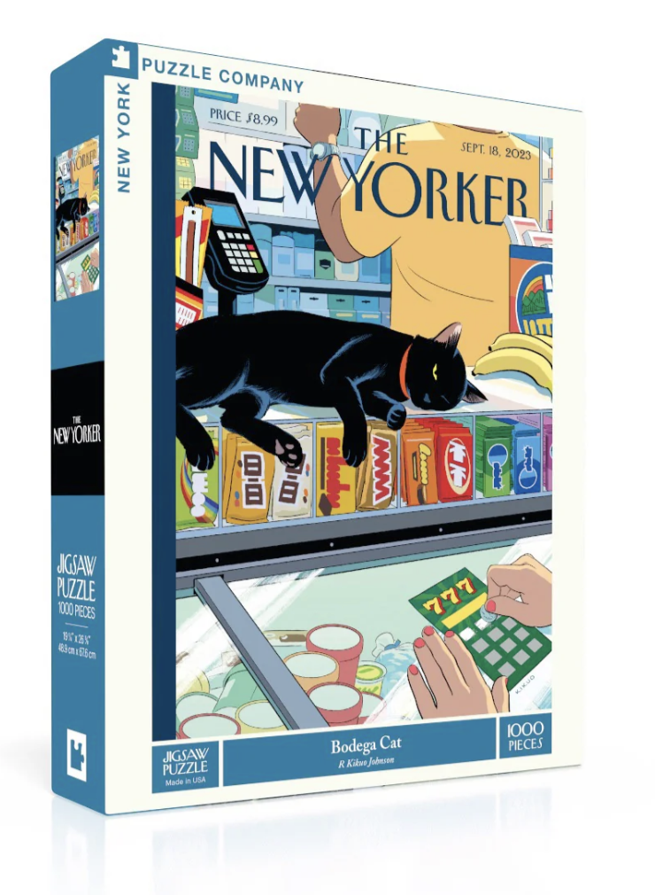
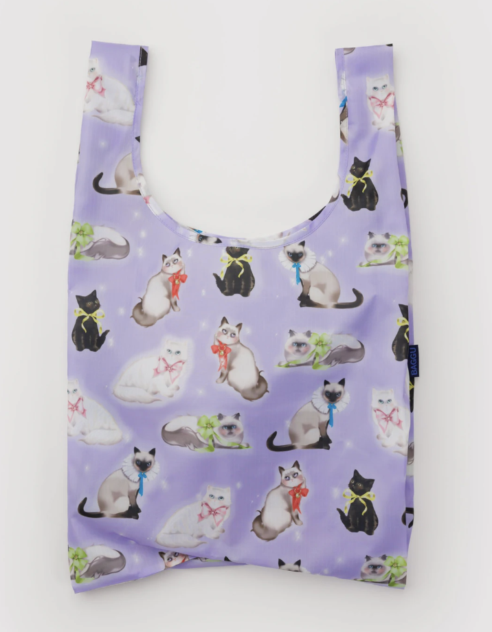
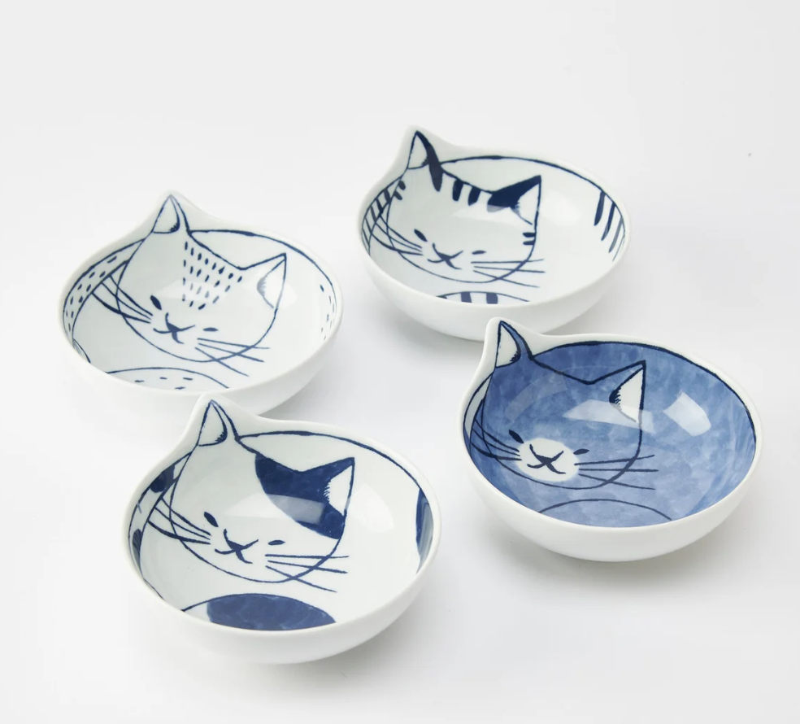

Courtesy of Anthropologie

1. Anthropologie Cat Breeds A-Z Dish Towel
This charming dish towel from Anthropologie features an adorable A-Z guide of cat breeds, making it both functional and decorative. It's the perfect gift for a cat mom who loves to add personality to her kitchen while celebrating her love for felines. The high-quality cotton blend is absorbent and durable, and the playful design adds a touch of whimsy to any home. It's a thoughtful, practical gift that shows you understand her passion for cats and appreciate her sense of style.

Courtesy of LEGO
2. LEGO Ideas Tuxedo Cat Building Set
This adorable LEGO Ideas Tuxedo Cat set is perfect for the cat mom who loves both building and cats. With over 1,100 pieces, it's a fun, engaging project that results in a beautiful display piece. The set features a posable cat with realistic details, including a bow tie and expressive eyes. It's a thoughtful gift that combines her love of cats with a creative hobby, and the finished model makes for a charming addition to any home. Whether she's a LEGO enthusiast or just loves cats, this set is sure to bring a smile to her face.

Courtesy of Pacagen
3. Pacagen Cat Allergen Neutralizing Spray
This is a true game-changer for any cat mom who struggles with allergies. Pacagen isn't just another fabric freshener—it's a targeted solution for cat allergies. Scientifically formulated to neutralize Fel d 1, the primary cat allergen, Pacagen's active ingredients break it down on contact. Spray it on the couch, bedding, or her cat's favorite blanket, and in just a few minutes allergens are reduced to harmless fragments. Safe, easy, and effective—this gift shows you understand her daily challenges and want to help her enjoy more comfortable cuddles with her feline friend.

Courtesy of New York Puzzle Company
4. New Yorker Bodega Cat 1000 Piece Jigsaw Puzzle
This charming 1000-piece jigsaw puzzle from the New York Puzzle Company features the iconic New Yorker cover "Bodega Cat" illustrated by R. Kikuo Johnson. The scene captures a quintessential New York moment with a bodega cat lounging contentedly on the counter, overseeing the bustling convenience store below. Perfect for cat moms who love puzzles, this gift combines her passion for felines with a relaxing, engaging activity. The finished puzzle measures 19.25"x26.625" and features a linen-style finish to reduce glare. It's a thoughtful gift that offers hours of enjoyment and results in a beautiful piece of art she can display or frame.

Courtesy of Baggu
5. Baggu Standard Baggu Fancy Cats Reusable Bag
This adorable reusable bag from Baggu features the "Fancy Cats" airbrush art design by Sara Rabin, showcasing whimsical cats in various poses wearing bows and collars. It's the perfect practical gift for a cat mom who wants to show off her love for felines while being eco-friendly. The bag carries 2-3 plastic grocery bags worth of stuff comfortably, holds up to 40lbs, and folds into its own compact 5" × 5" pouch for easy storage. Made from recycled ripstop polyester and machine washable, it's both stylish and sustainable. Whether she's heading to the grocery store, farmers market, or just running errands, this bag combines functionality with her cat-loving personality.

Courtesy of Musubi Kiln
6. Musubi Kiln Neco Hasami Cat Bowl Set
This beautiful Japanese ceramic cat bowl set from Musubi Kiln features charming cat designs that add a touch of whimsy to any kitchen. The Neco Hasami (cat scissors) design showcases adorable cat motifs, making it perfect for a cat mom who appreciates both functionality and style. These handcrafted bowls are not only beautiful but also practical for serving meals, snacks, or even as decorative pieces. Made with traditional Japanese ceramic techniques, this set combines quality craftsmanship with delightful cat-themed artistry. It's a thoughtful gift that celebrates her love for cats while adding elegance to her dining experience.